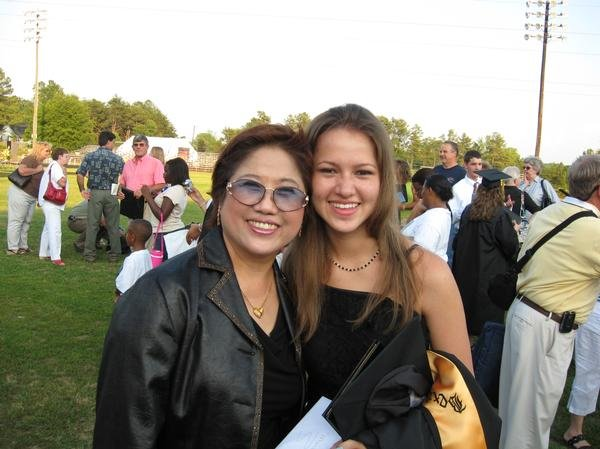

About Me
Hi everyone! My name is Mei please call me Mei. Mei Mei is fine. I am really enjoying this class. but project is killing me.
Honestly, the last project felt easier. I has been at a world wind pace. Me writing this is me procrastinating since I can't seem to get the portfolio section the way I want it.
I've really enjoyed learning everything but the implementation has a much steeper learning curve.
This is a real picture of my mother. See how she is Asian. And how yeah,... I do kind of look like her. And don't she look good at 58 years old. I know in this picture daaammmnnn!